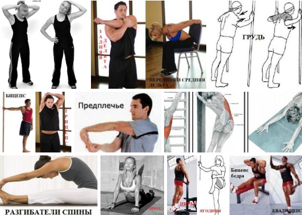

СТАТЬЯ 11
Растяжка мышц после тренировки
Когда делать растяжку? Растяжку нужно делать после того, как мышца забилась кровью – после силовой тренировки. Зачем нужна растяжка мышц? Она растягивает мышечные фасции, которые сжимают мышечные волокна. После этого у мышцы увеличивается возможность роста, а также улучшается...
СТАТЬЯ 11
Растяжка мышц после тренировки
Когда делать растяжку? Растяжку нужно делать после того, как мышца забилась кровью – после силовой тренировки.
Зачем нужна растяжка мышц? Она растягивает мышечные фасции, которые сжимают мышечные волокна. После этого у мышцы увеличивается возможность роста, а также улучшается поступление полезных веществ. Растяжка также способствует расслаблению мышц. Если пренебрегать растяжкой возможна скованность мышц, а это тормозит прогресс в тренировках, ведь как мышца может растянутся, так она может и сократится.
Какие мышцы растягивать? Нужно растягивать те мышцы которые были задействованы на протяжении именно этой тренировки. Для лучшего эффекта растяжки можно последнее упражнение сделать в пампинг режиме (много повторений в быстром темпе с маленьким весом).
Сколько тянуть мышцы? Растяжку мышц нужно делать на протяжении 10-20 секунд на каждое движение. А также её необходимо делать статично без покачиваний и рывков.
Упражнения для растяжки:
- шеи: возьмитесь рукой за противоположную сторону головы, и плавно потяните. Вы должны почувствовать напряжение шеи. Повторите то же самое на вторую сторону.
- дельт: возьмитесь рукой за что то на уровне плеча и проверните корпусом, чтоб растянулись мышцы задней головки дельты (рука должна быть перед грудью). Присядьте на стул и возьмитесь руками за спинку, наклонитесь максимально вперед, постарайтесь найти такое положение в котором будет тянутся передняя дельта. Задержитесь в этом положении на 10-20 сек.
- груди: ставите руку напротив плеча сбоку, уперев ладонь. Разворачивайте корпус так, чтоб чувствовалось растяжение в грудной мышце. Повторите то же самое с другой рукой. При этом рука должна быть немного согнута, для лучшего растяжения груди. Можно также упереться обеими руками на уровне плеча и стараться наклонится вперед. При чувстве растяжения грудных нужно задержаться в этой точке на 10-20 сек.
- бицепса: делаете то же самое что и с растяжением груди. Отличие только в том, что здесь нужно полностью выпрямлять руку.
- трицепса: поднимаете согнутую руку вверх, и прижимаете к голове, другой рукой возьмите первую руку за локоть и тянете в сторону второй руки. В трицепсе должно быть тянущее ощущение.
- предплечья: выпрямляете руку и прижимаете к себе, второй рукой берете первую за запястье и тянете так чтобы рука больше разгибалась. Вы должны чувствовать растяжение в предплечье. Повторяете то же самое со второй рукою.
- широчайших: беретесь одной рукой вверху, а второй немного ниже за шведскую стенку. Ноги ставите поближе к стенке. Старайтесь так отвести таз от стенки, чтоб почувствовалось напряжение в широчайшей мышце спины.
- разгибателей спины: сидя на коврике старайтесь максимально наклонить корпус к ногам, так что б почувствовать напряжение в пояснице.
- пресса: возьмитесь руками за шведскую стенку на уровне груди, и провисните так, чтоб пресс начал тянуться. Можно также принять упор лежа, и оставаясь стоять на руках опустите таз так, чтоб пресс начал тянутся. Задержитесь в этой позиции на 10-20 сек.
- ягодичных мышц: станьте возле стены поднимите вверх согнутую ногу, и потяните за колено. Вы должны почувствовать растяжение в ягодичной мышце, и задней поверхности бедра.
- квадрицепса: возьмитесь рукою за шведскую стенку, а второй возьмитесь за ступню и потяните вверх, пока не почувствуете растяжение в квадрицепсе. Задержитесь в этом положении на 10-20 секунд.
- бицепса бедра: поставьте ногу на уровне пояса, и максимально наклонитесь. Второй вариант: садитесь на лавку, одну ногу оставляете на лавке, а вторую опускаете на пол. Наклоняйтесь вниз, к ноге что лежит на лавке до тех пор пока не почувствуете растяжение садней поверхности бедра. Задержитесь в этом положении на 10-20 секунд.
- икроножных: станьте носком одной ноги на подставку, опуститесь вниз и задержитесь в нижней точке на 10-20 секунд. Повторите на второй ноге.